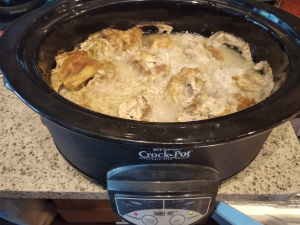

Chicken Congee

Ingredients:
- 3 bone-in, skin-on chicken thighs (about 1.5 pounds total)
- 1 cup brown rice (use jasmine rice if you want the real congee)
- 4 (1⁄4-inch-thick) slices fresh ginger, smashed
- 2 teaspoons kosher salt, plus more as needed
- 8 cups water (for a thinner congee, add more water)
Optional toppings: (add when you serve)
- Roasted peanuts
- Thinly sliced scallions
- Minced fresh ginger
- Fresh cilantro leaves
- Tamari or soy sauce
How to make it: * Put in slow cooker for 10 hours on low or 5 on high. * Take the chicken outside of the cooker, shred it and discard bones, skin, cartilage, and ginger. Add it back to the cooker.